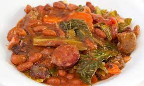

Feijoada

Aquela refeiçao ligeira V1
Ingredientes
- entrecosto
- 400 g
- toucinho
- 100 g
- chispe de porco
- 100 g
- orelha de porco cozida
- 100 g
- chouriço de sangue
- unid.
Preparaçao
- Num tacho coza as carnes, previamente lavadas, e os chouriços em água temperada com 1 c. de chá de sal.